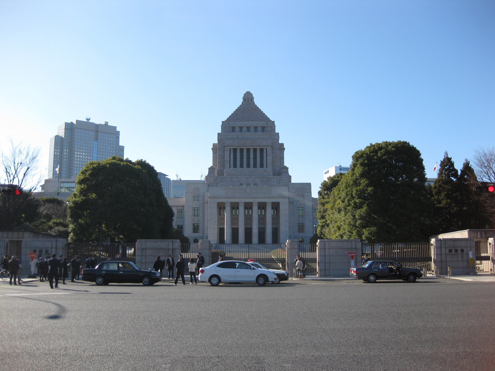

O'zbekiston va Yaponiya: diplomatik aloqalar va yordam (1992–1996)
Mustaqillikning dastlabki yillarida O'zbekiston va Yaponiya rasmiy aloqalar o'rnatdi. Yaponiyaning O'zbekiston mustaqilligini tan olishi, diplomatik munosabatlarning aniq sanasi, elchixonalar, Yaponiyaning ODA (rasmiy rivojlanish yordami) va JICA orqali yirik donor sifatidagi roli, dastlabki kreditlar va Islom Karimovning 1994-yilgi tashrifi manbalar asosida bayon etiladi.

1991-yil 31-avgustda O'zbekiston davlat mustaqilligini e'lon qildi, o'sha yilning dekabr oyi oxirida esa SSSR rasman tarqatildi. Shu voqealar ketidan yangi mustaqil davlatni xalqaro miqyosda tan olish to'lqini boshlandi. Osiyoning yetakchi iqtisodiy davlati Yaponiya ham O'zbekistonni dastlabki tan olgan mamlakatlar qatoridan joy oldi va keyinchalik 1990-yillar davomida mamlakatimizning mintaqadan tashqaridagi eng yirik yordam beruvchi hamkorlaridan biriga aylandi. Quyida 1991–1996-yillarda ikki davlat o'rtasidagi diplomatik munosabatlarning o'rnatilishi va iqtisodiy hamkorlikning boshlanishi aniq sanalar va manbalar asosida bayon etiladi.
Tan olish (1991-yil 28-dekabr) va diplomatik munosabatlar (1992-yil 26-yanvar)
Yaponiya O'zbekiston mustaqilligini 1991-yil 28-dekabrda tan oldi, ikki davlat o'rtasida rasmiy diplomatik munosabatlar esa 1992-yil 26-yanvarda o'rnatildi. Bu sanalar O'zbekiston Tashqi ishlar vazirligi va O'zbekistonning Yaponiyadagi elchixonasi ma'lumotlarida tasdiqlangan. Shu tariqa Yaponiya O'zbekiston bilan mustaqillikning birinchi oylarida aloqa o'rnatgan davlatlar qatoridan o'rin oldi (Manba: O'zbekiston TIV — Osiyo-Tinch okeani mintaqasi davlatlari bilan hamkorlik; O'zbekistonning Yaponiyadagi elchixonasi).
Elchixonalarning ochilishi
Rasmiy aloqalar o'rnatilgach, Yaponiya 1993-yil yanvar oyida Toshkentda o'z elchixonasini ochdi — bu Markaziy Osiyodagi ilk Yaponiya diplomatik vakolatxonalaridan biri edi. O'zbekiston o'z navbatida 1996-yil fevral oyida Tokioda elchixonasini tashkil etdi. Shu bilan ikki davlat to'laqonli diplomatik vakolatxonalar almashdi va muntazam siyosiy-iqtisodiy muloqot uchun institutsional asos yaratildi (Manba: Embassy of Japan in Uzbekistan; O'zbekistonning Yaponiyadagi elchixonasi).

Nega Yaponiya Markaziy Osiyoga yuzlandi
SSSR tarqalgach, Yaponiya yangi mustaqil davlatlarni bozor iqtisodiyotiga va barqaror rivojlanishga o'tishida qo'llab-quvvatlashni o'zining tashqi siyosatidagi muhim yo'nalishga aylantirdi. 1997-yilda bosh vazir Ryutaro Xashimoto tomonidan e'lon qilingan "Yevrosiyo diplomatiyasi" va keyinchalik "Ipak yo'li diplomatiyasi" doirasida Markaziy Osiyo alohida ahamiyat kasb etdi. O'zbekiston o'zining aholisi, geografik markaziy o'rni va resurslari bilan Yaponiya uchun mintaqadagi asosiy sheriklardan biriga aylandi; ba'zi tahlilchilar O'zbekistonni Yaponiyaning Markaziy Osiyodagi yordam siyosatining "namunaviy mamlakati" sifatida ta'riflashgan (Manba: V. Xoshimov — Foreign Policy of Japan and Central Asia (JIIA); Silk Road Studies — Japan's Silk Road Diplomacy).
Yaponiyaning yordami: ODA va JICA
Yaponiya O'zbekistonga yordamni rasmiy rivojlanish yordami (ODA — Official Development Assistance) tizimi orqali yetkazdi. Texnik hamkorlik (ekspertlar yuborish, mutaxassislarni o'qitish) 1993-yilda boshlandi; imtiyozli yen kreditlari (ODA loans) 1994-yilda Yaponiya xalqaro hamkorlik banki (JBIC) orqali, grant (qaytarilmas) yordam esa 1995-yilda Yaponiya Tashqi ishlar vazirligi (MOFA) orqali yo'lga qo'yildi. Keyinchalik bu dasturlarning amaliy ijrosi Yaponiya xalqaro hamkorlik agentligi (JICA) zimmasiga o'tdi. 1993-yildan 2024-yilgacha JICA orqali sog'liqni saqlash, ta'lim, energetika, transport va telekommunikatsiya sohalarida amalga oshirilgan loyihalarning umumiy qiymati taxminan 5,6 milliard dollarni tashkil etdi (Manba: JICA — History of JICA's Cooperation in Uzbekistan; O'zbekiston TIV).
Dastlabki kreditlar va loyihalar (1994–1996)
1990-yillarning o'rtalarida Yaponiya O'zbekistonga yirik infratuzilma loyihalari uchun imtiyozli yen kreditlarini ajrata boshladi. 1996-yilda uchta mahalliy aeroport (jumladan Toshkent atrofidagi) modernizatsiyasi uchun taxminan 15,5 milliard yenlik kredit kelishildi; shu yili Toshkent telekommunikatsiya tizimi loyihasiga ham taxminan 15,5 milliard yen (o'sha davr kursida qariyb 155 million dollar), temir yo'l yo'lovchi tashish tizimini yaxshilashga esa taxminan 6 milliard yen ajratildi. Umuman olganda, ba'zi baholashlarga ko'ra, 1997-yilga kelib Yaponiya O'zbekistonga qariyb 500 million dollar miqdorida imtiyozli kredit va grantlar taqdim etishni ko'zda tutgan edi (Manba: JICA — ODA Loans / Central Asia and Japan's ODA Loans; V. Xoshimov (JIIA)).
Islom Karimovning Yaponiyaga tashrifi (1994)
Prezident Islom Karimovning Yaponiyaga birinchi rasmiy tashrifi 1994-yil may oyida bo'lib o'tdi. Tashrif chog'ida bir qator hujjatlar, jumladan ikki davlat o'rtasidagi do'stona munosabatlarni chuqurlashtirishga oid Qo'shma bayonot imzolandi. Shuningdek, O'zbekiston–Yaponiya va Yaponiya–O'zbekiston iqtisodiy hamkorlik qo'mitalarining birinchi yig'ilishi o'tkazildi hamda bu qo'mitalarning yig'ilishlarini muntazam o'tkazib turish kelishib olindi. O'sha davrda Tokioda parlamentlararo "Yaponiya–O'zbekiston" do'stlik guruhi ham tashkil etildi. Bu tashrif ikki davlat o'rtasidagi siyosiy va iqtisodiy hamkorlikning jadal rivojlanishiga turtki berdi (Manba: V. Xoshimov — Foreign Policy of Japan and Central Asia (JIIA); M. Rakhimov — Central Asia and Japan).
Kadrlar tayyorlash va madaniy hamkorlik
Iqtisodiy yordam bilan birga Yaponiya inson kapitalini rivojlantirishga alohida e'tibor qaratdi. 1990-yillardan boshlab o'zbekistonlik talabalar yapon universitetlarida o'qish uchun stipendiyalar oldi, mutaxassislar esa Yaponiyada malaka oshirish amaliyotlaridan o'tdi; yillar davomida 400 dan ortiq talaba stipendiya olgan va 2 500 ga yaqin o'zbekistonlik mutaxassis Yaponiyada stajirovka o'tagan. Bu yo'nalish keyinchalik Toshkentda ochilgan O'zbekiston–Yaponiya inson resurslarini rivojlantirish markazi (Yaponiya markazi) orqali davom ettirildi; shuningdek til, ta'lim va madaniy almashuv dasturlari ikki xalq o'rtasidagi aloqalarni mustahkamladi (Manba: O'zbekiston TIV; JICA — History of JICA's Cooperation in Uzbekistan).
Ahamiyati va merosi
1991–1996-yillardagi dastlabki qadamlar O'zbekiston va Yaponiya o'rtasidagi uzoq muddatli hamkorlikning poydevorini qo'ydi. Yaponiya mintaqadan tashqaridagi eng yirik yordam beruvchilardan biri sifatida O'zbekistonning transport, aloqa va energetika infratuzilmasini yangilashga, kadrlar tayyorlashga katta hissa qo'shdi. Bu asos keyinchalik 2002-yil 29-iyulda e'lon qilingan strategik sheriklikka, 2004-yilda ishga tushirilgan "Markaziy Osiyo plyus Yaponiya" muloqot mexanizmiga va yuqori darajadagi muntazam tashriflarga zamin yaratdi. Shu tariqa 1990-yillarning boshidagi diplomatik tan olish va ODA yordami bugungi keng ko'lamli O'zbekiston–Yaponiya hamkorligining boshlang'ich nuqtasi bo'lib qoldi (Manba: O'zbekiston TIV; M. Rakhimov — Central Asia and Japan).

Manbalar
- O'zbekiston TIV — Osiyo-Tinch okeani mintaqasi davlatlari bilan hamkorlik
- Embassy of the Republic of Uzbekistan in Japan — Bilateral relations
- JICA — History of JICA's Cooperation in Uzbekistan
- JICA — Central Asia and Japan's ODA Loans
- V. Khoshimov — Foreign Policy of Japan and Central Asia (JIIA)
- Wikipedia — Foreign relations of Uzbekistan (Japan)